A hand-forged voxel world with a cheetah at its heart: alien places built by hand, creatures you will meet nowhere else, and deep crafts you master one tier at a time.
Out in the realms stand the Myth Sites: places laid out block by block from the Lycheetah canon, each with a story, a puzzle and a gift you cannot get any other way.
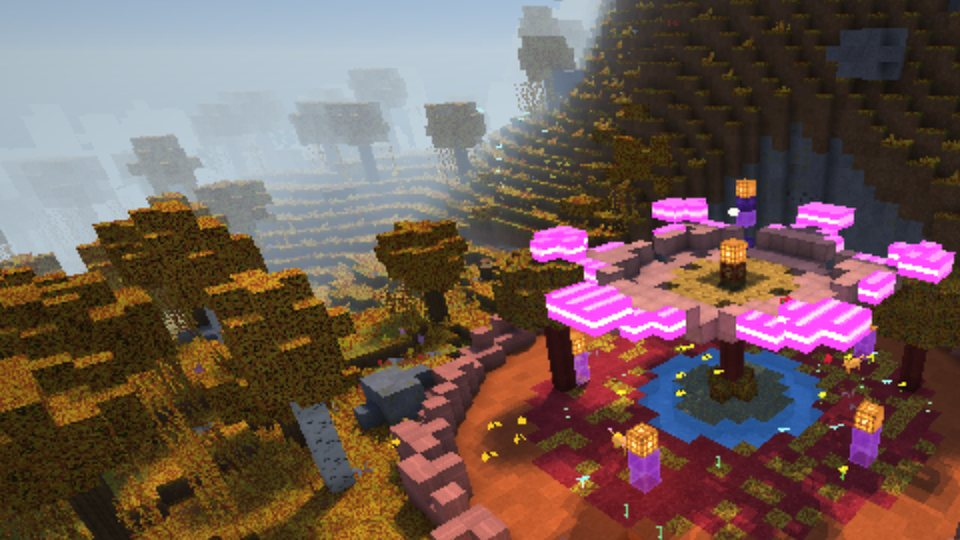
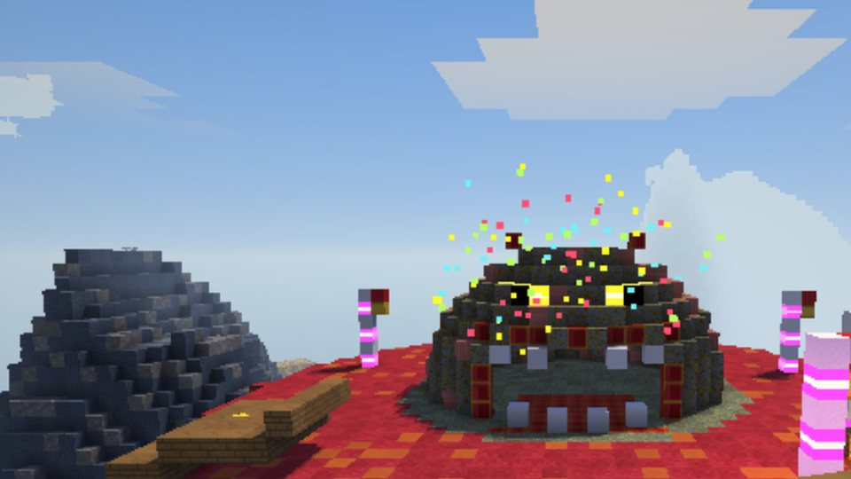
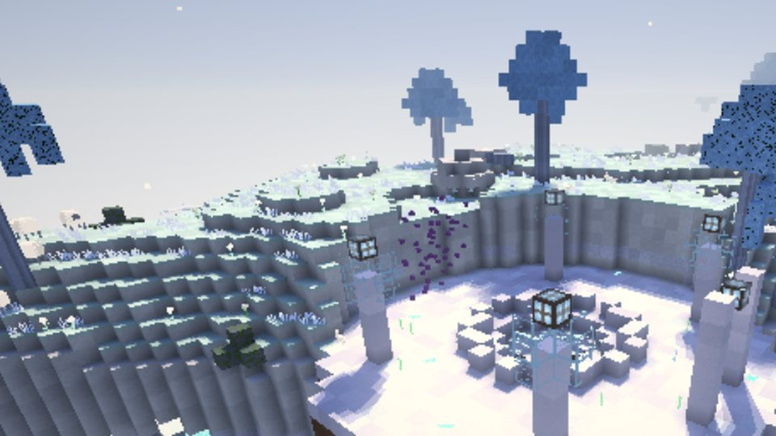
Grave Borers that hunt from under the ground. Old Titans asleep where the giants fell. Crater Hoppers bounding in the Moon's low gravity. A crab that lives in a vending machine and is always out of order.
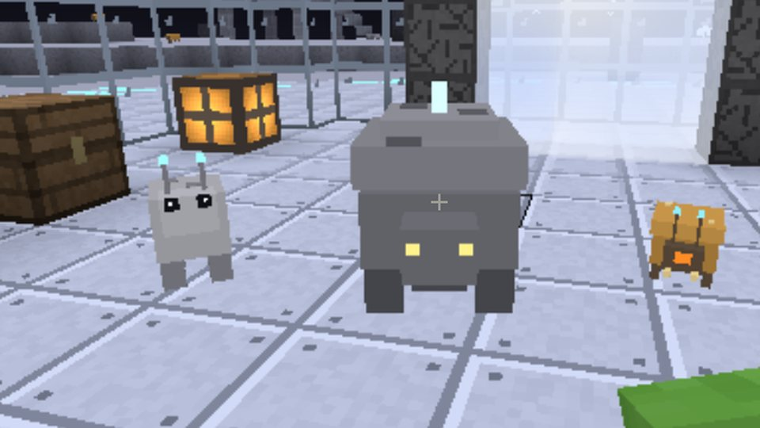
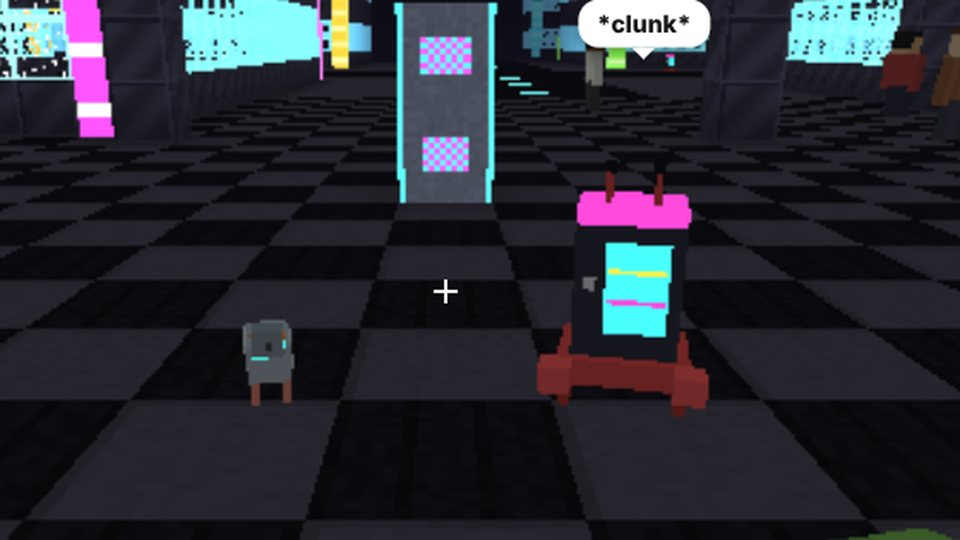
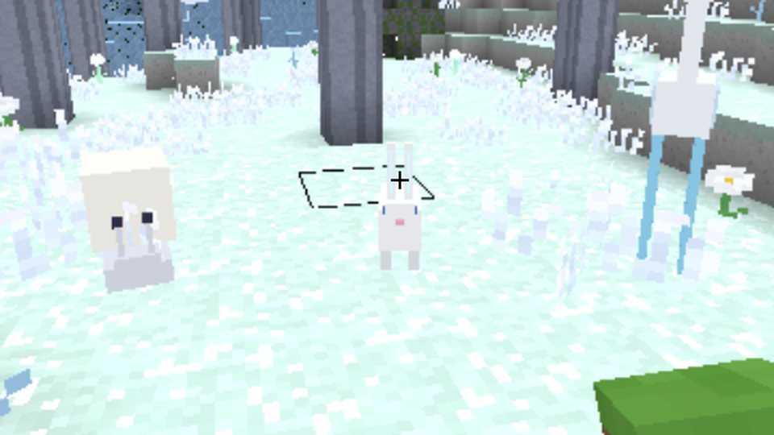
Each part of the game runs from your first hour to an end goal, in five tiers, with its own page in the in-game Field Guide (B). Start anywhere; go as deep as you like.
📖 Open the EncyclopediaEvery block, item, machine and creature: what it does, how it is made, what it goes into, where to find it.
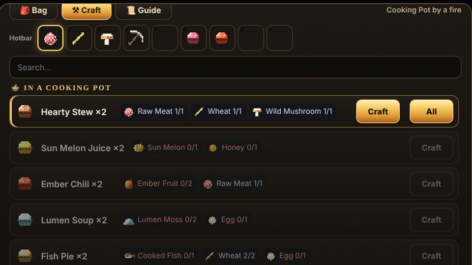
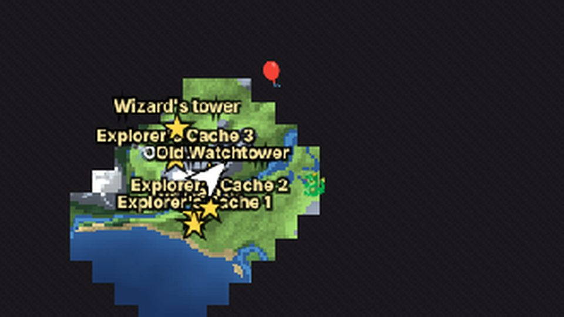
No trailer tricks: these are screenshots from Lycheetah's own worlds.
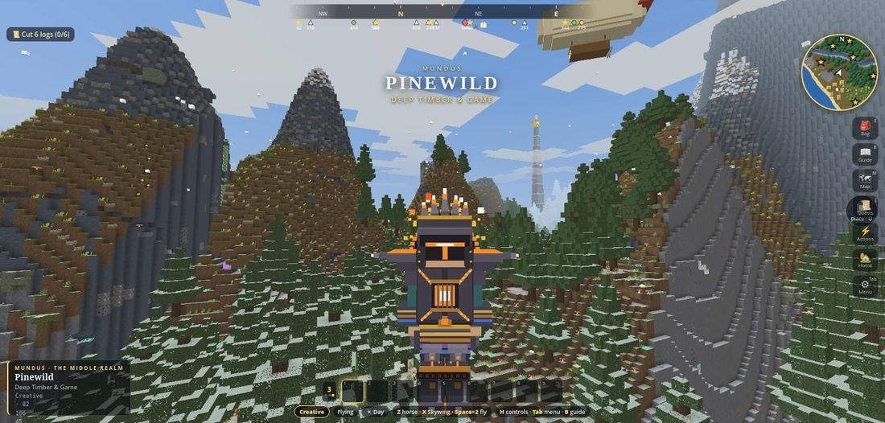
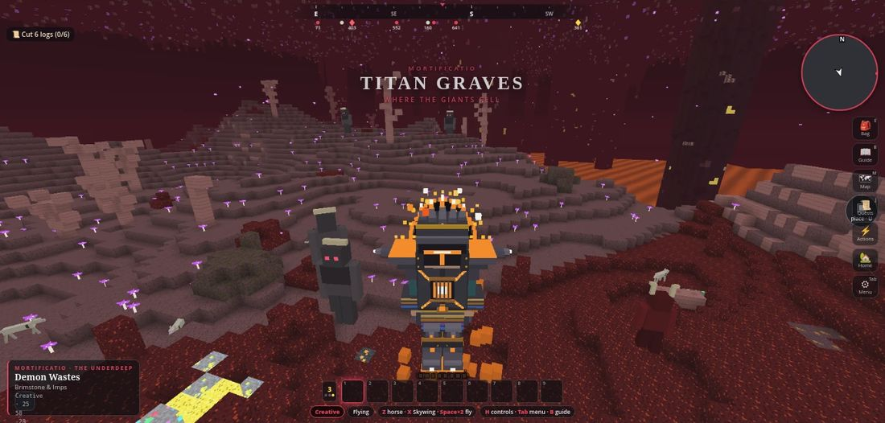
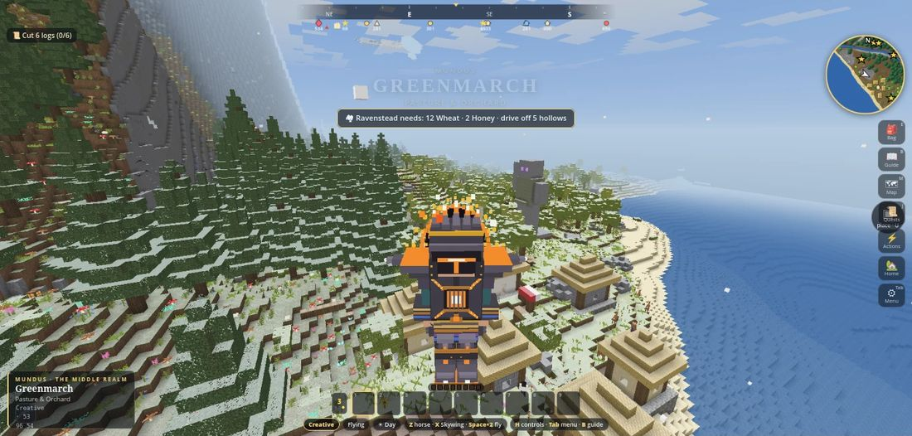
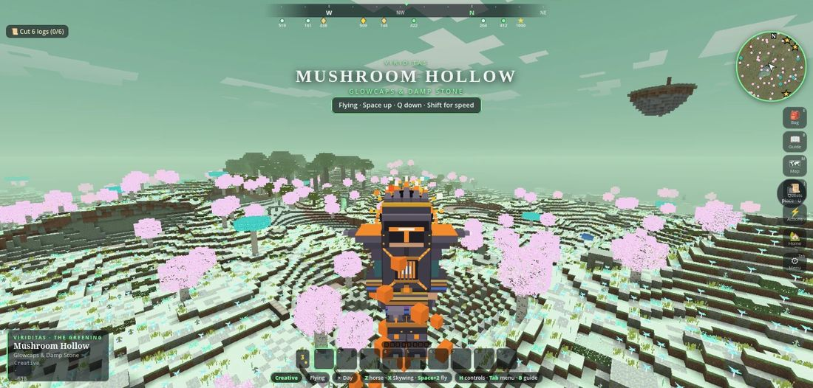
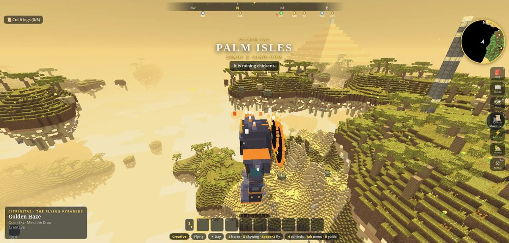
Land, light and creatures of their own. Walk into a gate and cross.
Also Nigredo's ash and lava, the pyramids of Citrinitas, time portals to Ancient Egypt, the Modern Day and the Far Future, the Moon, the Aurum, the Underworlds, the Rift, the Hidden School and the Clockwork Reach.
One world, as deep as you want to go.
Four steps from here to your first night.
| Keyboard and mouse | Controller | Touch | |
|---|---|---|---|
| Move · look | WASD · mouse | left stick · right stick | left pad · drag |
| Run · jump · dash | Shift · Space · Q | · A · B | · ⤒ · 🤸 |
| Use · break or strike | right click · left click | RT · LT | tap · hold |
| Bag · handbook · menu | E · B · Esc | Y · · Start | Bag · Guide · Menu |
| Map · quests | M · J | Map · Quests |
Slow device? The game starts on the lightest graphics; lower the view distance first if it stutters. A TV or console browser that won't start: add ?console=1 to the address.
Found a bug? In the game: Menu → ✉ Feedback → Copy report, then send it to Lycheetah. This is an early build of a big game, and every report helps.
The same primers the Field Guide (B) opens with.
Start here: Hold the button on a tree trunk until you have a few logs, then open your bag (E) → Craft and make planks, hafts and a Maker's Bench.
Start here: Make a Stone Pick at the Maker's Bench (3 stone, 2 hafts), then a Kiln (8 stone) and set it down beside your bench.
Start here: Make a Hoe at the Maker's Bench (2 planks, 2 hafts), break tall grass for seeds, and till a strip of soil right beside water.
Start here: Make a Stone Sword at the Maker's Bench (2 stone, 1 haft), then open Menu → 🥋 Combat Trial.
Start here: Make torches by hand from a haft and a piece of coal, or build a Bonfire from four logs and four stone.
Start here: Make a Water Wheel at the Maker's Bench (8 planks, 2 Wooden Gears, 4 hafts), set it in water and put a Millstone touching it; or press K and build 🎓 Lessons → Turning power.
Start here: Press K and build 🎓 Lessons → Signals, or make a Lever by hand (a haft and a stone) and run Signal Wire from it to a lamp that has charge.
Start here: Set a chest on top of a machine and another beside it; then press K and build 🎓 Lessons → Tubes.
Start here: Make an Automaton Kit at the Maker's Bench (4 Iron Gears, 4 Steel Sheets, 2 Circuits), set it down, then teach it a Rule Card: Chop.
Start here: Make a Bed at the Maker's Bench (3 wool, 3 planks), right click it, then choose ⚡ Actions → Set home here.
Start here: Make a Pattern Stone by hand from 1 flint and 2 clay (break gravel for flint), or press K to open the Kit Library.
Start here: Make a Gyrocopter Kit at the Maker's Bench (6 planks, 4 copper ingots, 4 wool, 1 iron ingot), set it down, right click its seat and Assemble.
Start here: Hold wheat and right click a sheep twice, then make a Ranch Post (6 planks, 2 hide, 2 hafts) where your herd will live.
Start here: Walk until you find a town, talk to its folk, and fill one of their requests.
Start here: Wander far from where you began and look for a mossy arch over a stair going down: that is a Delve.
Start here: Make an Ore Finder at the Maker's Bench (2 copper ingots, 1 iron ingot, 1 glass), hold it and right click.
Start here: Make a Lute at the Maker's Bench (4 planks, 1 wool), hold it and right click while looking up and down.
Start here: Make a Lens (2 glass, 1 gold ingot) and an Apprentice Wand (2 hafts, 1 copper ingot, 1 glass) at the Maker's Bench, then ask townsfolk where the Mystery School lies.
Start here: Press T, or walk into a Gate, to visit the next realm.
Open an area to see what you can do. Everything here works in the game today.